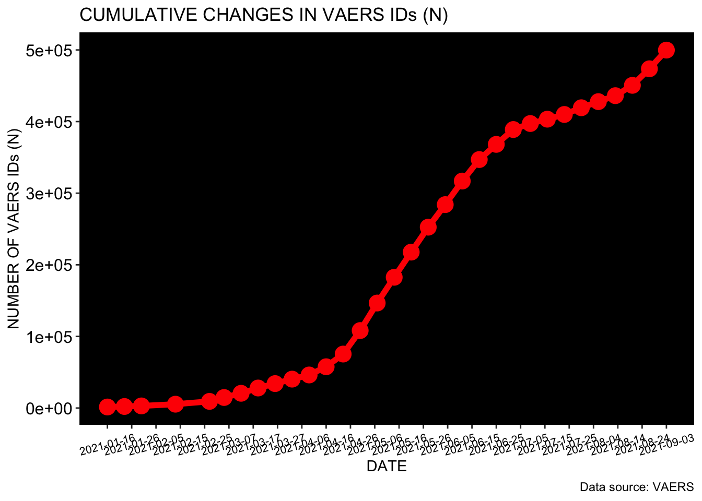
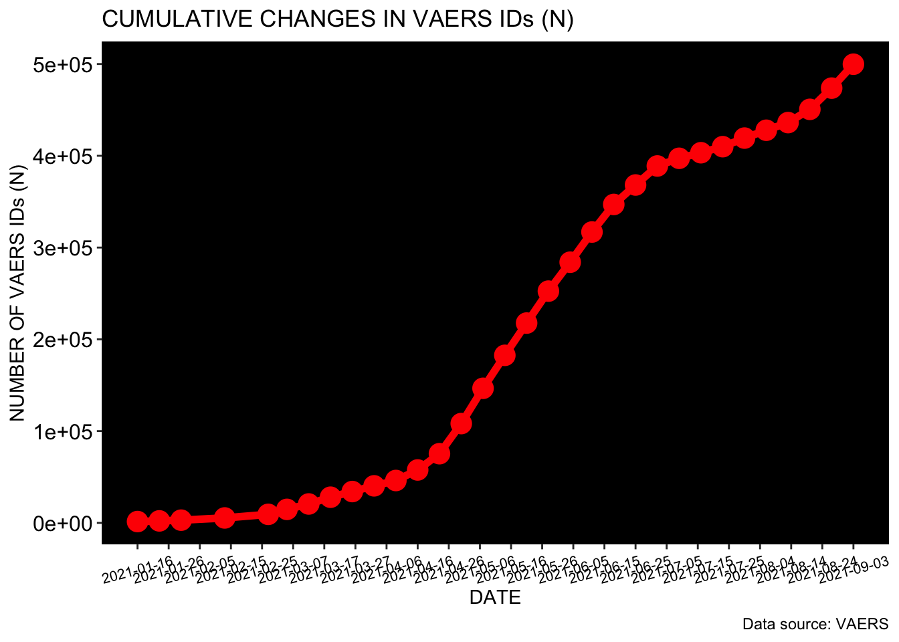
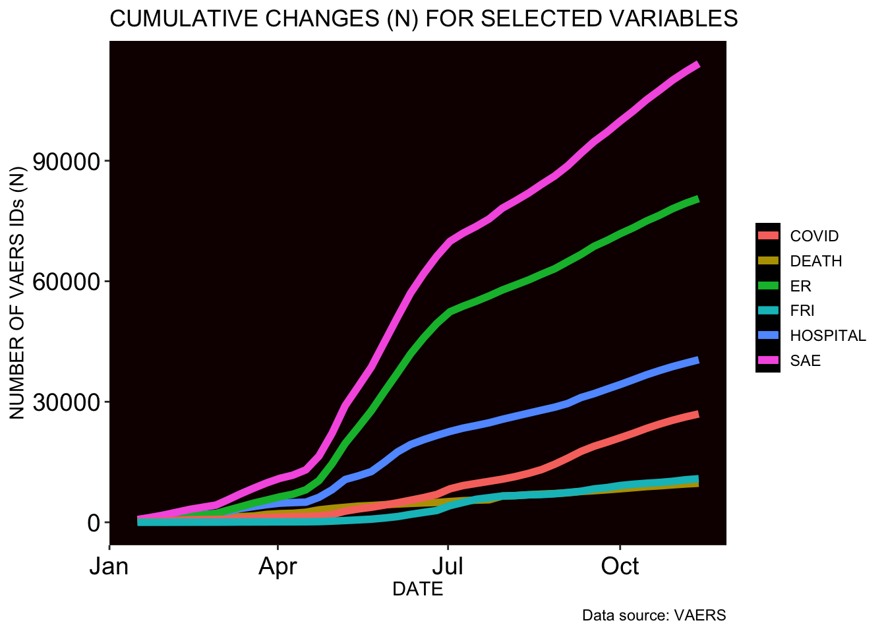
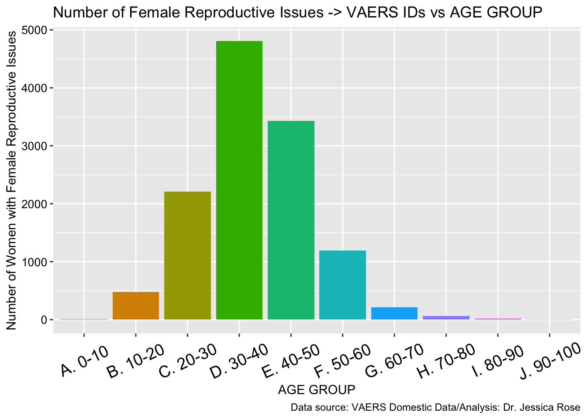
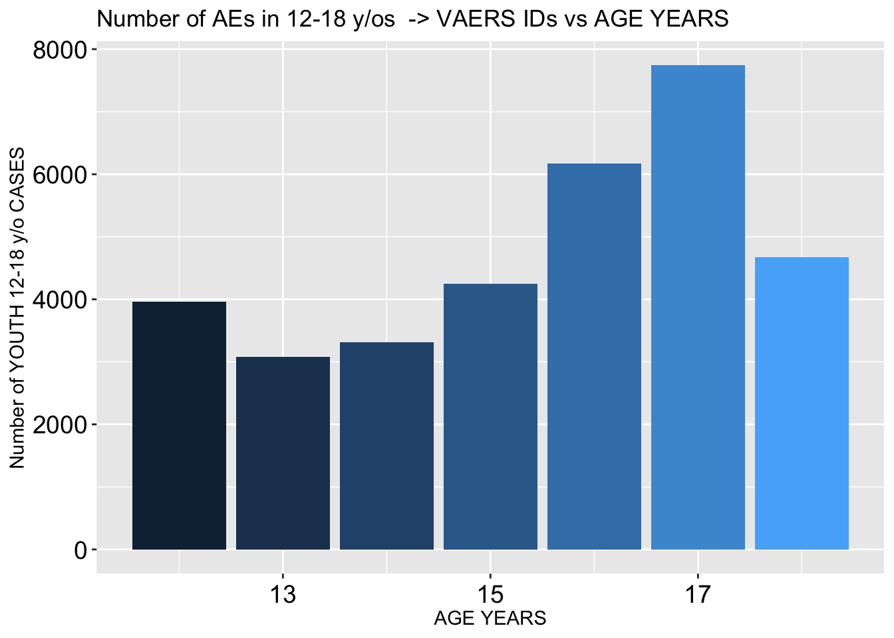
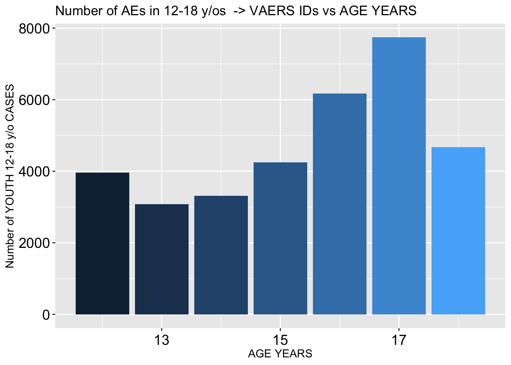

This is an R Markdown sheet generated from the VAERS data. For the most part, only figures are shown. I decided to show figures pertaining to Death, Female Reproductive Issues, Breakthrough COVID-19 infections and Cardiovascular and Immunological adverse events. ALso included is some stuff on kids and Myocarditis.
I start by coalescing the .csv files downloaded from the VAERS website: https://vaers.hhs.gov/data/datasets.html
This is the total number of adverse events in the context of COVID-19 products from Fizer, Modrna and JJ
## [1] 403335## # A tibble: 4,036 x 2
## SYMPTOM1 n
## <chr> <int>
## 1 Chills 35513
## 2 Arthralgia 22527
## 3 Dizziness 21452
## 4 Injection site erythema 13959
## 5 Fatigue 13732
## 6 Asthenia 12213
## 7 Headache 10791
## 8 Erythema 8984
## 9 COVID-19 6460
## 10 Rash 5264
## # … with 4,026 more rowsThe following table is a summary of some variables in the context of COVID-19 product roll-out including changing fully-injected numbers (FV = Fully Vaccinated; SAE = Severe Adverse Events; ER = Emergency doctor visits; COVID = Breakthrough infections; FRI = Female Reproductive Issues)
## DATE IDs FV DEATH HOSPITAL ER SAE COVID FRI
## 1 2021-01-16 1431 4582089 137 338 338 690 194 4
## 2 2021-01-23 2160 7664179 281 607 576 1207 254 7
## 3 2021-01-30 2946 11037313 456 953 847 1806 326 8
## 4 2021-02-13 5351 18895522 810 1747 1493 3221 619 24
## 5 2021-02-27 9286 27167910 984 2195 2187 4291 717 34
## 6 2021-03-05 14701 31720149 1162 2676 2980 5535 776 43
## 7 2021-03-12 20586 35000000 1419 3412 3855 7065 943 67
## 8 2021-03-19 27955 44145522 1561 3913 4763 8470 1057 77
## 9 2021-03-26 34121 48700000 1957 4387 5529 9796 1169 88
## 10 2021-04-02 40348 57980000 2149 4758 6329 10930 1267 98
## 11 2021-04-09 46163 64420000 2240 4906 6983 11724 1375 105
## 12 2021-04-16 57641 80610000 2500 5009 8084 13057 1404 123
## 13 2021-04-23 75370 89250000 3084 6215 10375 16478 1587 165
## 14 2021-04-30 108191 99670000 3442 8099 14553 22145 1930 287
## 15 2021-05-07 146622 108930000 3731 10648 19620 29024 2776 436
## 16 2021-05-14 182559 118990000 4015 11557 23641 33791 3317 597
## 17 2021-05-21 217716 126610000 4169 12625 27774 38650 3742 774
## 18 2021-05-28 252523 132770000 4372 14977 32547 44860 4285 1067
## 19 2021-06-04 284041 136640000 4547 17520 37184 51068 4850 1421
## 20 2021-06-11 316929 141580000 4700 19354 41937 57073 5497 1967
## 21 2021-06-18 346967 148460000 4825 20571 45952 61917 6151 2460
## 22 2021-06-25 368162 151620000 4931 21636 49511 66255 6414 2940
## 23 2021-07-02 388900 155880000 5163 22612 52399 69941 9442 5351
## 24 2021-07-09 397262 158290000 5375 23441 53789 71963 9721 5557
## 25 2021-07-16 403335 160410000 5508 24087 55016 73645 9939 5723

 


 This is the number of birth defects.
## [1] 226This is the number of deaths and the percentage per total AEs.
## [1] 5508## [1] 1.365614These are the number of hospitalizations and emergency doctor visits.
## [1] 24087## [1] 55016These are the numbers of Severe Adverse Events (SAEs): Deaths, Hospital, ER, Life threatening, Disabling, Birth defect with the total SAE count and percentage of all AEs.
## [1] 5508## [1] 24087## [1] 55016## [1] 6927## [1] 5945## [1] 226## [1] 73645## [1] 18.25902Histogram showing distribution of SAEs according to age group
 Actual VAERS SAE percentage compared to Standard VAERS SAE percentage
Actual VAERS SAE percentage compared to Standard VAERS SAE percentage
## Percent_SAE SAE PERC
## 1 Standard 62000 15
## 2 Actual 73645 18 Breakthrough COVID-19 case count AND PERCENTAGE of total ID count
Breakthrough COVID-19 case count AND PERCENTAGE of total ID count
## [1] 9939## [1] 2.464205


Female Reproductive Events count
## [1] 5722## [1] 1.418672Histogram showing distribution of Female Reproductive Issues by age group

##
## Chi-squared test for given probabilities
##
## data: FRI_CASES_VD_OD$OBSERVED
## X-squared = 15562, df = 50, p-value < 2.2e-16Heatmap showing Female Reproductive Issues wrt VAX DATE and ONSET DATE. Early April shows a clustering of intersecting points.

 Cardiac Events Count
Cardiac Events Count
## [1] 131458
## [1] 16245## [1] 3.962215
## [1] 13.86021## [1] 12.15673Immunological Adverse Effects Count
## [1] 136176
 



## [1] 602## [1] 0.1492556